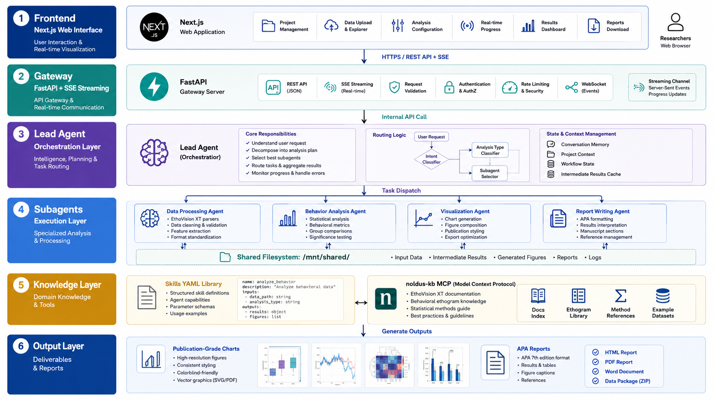
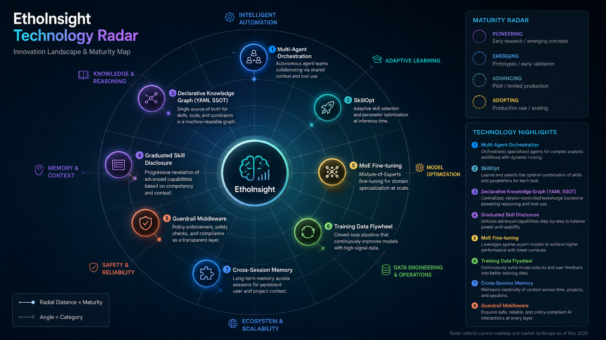
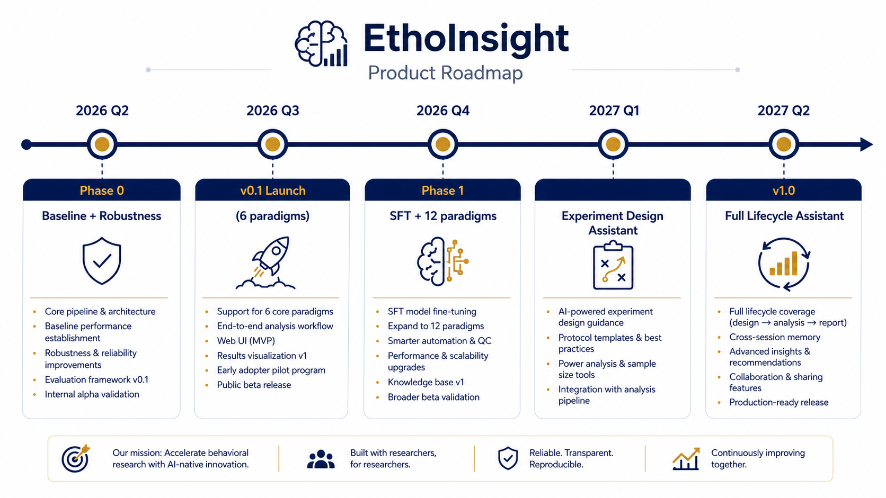

EthoInsight is the world's first AI multi-agent analysis system purpose-built for behavioral research. Researchers upload EthoVision XT trajectory data — the AI autonomously performs statistical analysis, expert interpretation, and generates APA-formatted manuscript-ready reports. Zero lines of code required.
A behavioral researcher's core job is experimental design, behavioral interpretation, and pattern discovery — not writing Python scripts. Yet the path from EthoVision XT data export to publication-ready conclusions requires crossing three mountains: statistics, programming, and visualization.
| Traditional Approach | EthoInsight | |
|---|---|---|
| Analysis Time | Hours (manual Python/R scripting) | Minutes (AI-powered automation) |
| Statistical Rigor | Depends on individual researcher expertise | Auto Shapiro-Wilk → intelligent parametric/non-parametric selection |
| Chart Quality | Requires matplotlib/ggplot proficiency | One-click publication-grade charts (Raincloud / Violin / Trajectory / Heatmap) |
| Domain Knowledge | Must search literature for reference ranges | Built-in behavioral knowledge base (graduated Skill injection) |
| Report Writing | Manual, inconsistent formatting | APA format with effect sizes + literature citations + limitations |
| Reproducibility | Script-dependent, difficult to replicate | Standardized pipeline, declarative catalog-driven, 100% reproducible |
EthoInsight is not another "ChatGPT wrapper." It's a systems engineering achievement where 5 specialized AI agents collaborate to complete complex analysis tasks. Each agent does one thing exceptionally well, passing structured hard facts through a schema-constrained Handoff protocol — no LLM free-form improvisation.
Understands researcher intent in natural language, identifies the correct EthoVision XT template from 19 variants, generates a structured analysis plan (metric_plan.json), and dispatches subagents sequentially.
Invokes the ethoinsight analysis library based on a declarative Catalog (YAML SSOT). Automatically handles data parsing, metric computation, and chart generation. All computations are deterministic and reproducible.
Audits statistical method selection, investigates confounds (unequal sample sizes, weight differences, time-of-day effects), and discovers insights the researcher might miss. Three-tier judgment: statistical → domain → quality.
Reads analysis results and insights to produce a structured APA-format report: Results (statistics + effect sizes + figure references) + Discussion (interpretation + literature comparison + limitations).
Answers paradigm, terminology, and methodology follow-up questions. Cross-session memory: "Your EPM last week showed anxiety, OFT this week shows it too — converging evidence, higher confidence."
Unlike traditional agent systems where LLMs improvise freely, EthoInsight follows a declarative orchestration philosophy: all enumerable knowledge (paradigm definitions, metric formulas, chart rules) is materialized in YAML Catalogs as the Single Source of Truth (SSOT). LLMs handle only the non-enumerable — intent understanding and domain reasoning.

EthoInsight sits at the intersection of multiple frontier technology trajectories. Each of the following is an actively explored research direction in academia and industry — we've integrated them into a single, working product.

In traditional AI agent development, skills and prompts are tuned through costly, non-convergent human trial-and-error. We've adopted Microsoft Research's SkillOpt methodology, which reframes skill optimization as a quantifiable optimization problem:
Key Innovation: Custom EthoInsight EnvAdapter enables SkillOpt's training loop to directly drive our multi-agent pipeline. Each paradigm is independently optimized, producing a benchmark-validated best_skill.md. Optimized skills then drive the agent to generate high-quality SFT training data, ultimately fine-tuning the Qwen3-30B-A3B MoE model — forming a complete flywheel: Expert Knowledge → Skill Optimization → SFT Data → Model Internalization.
All enumerable knowledge (metrics, charts, statistical rules) materialized in YAML Catalog as SSOT. LLMs handle only the non-enumerable — intent understanding and domain reasoning. No "LLM trial-and-error."
Subagents communicate via JSON Schema-constrained Handoff files containing hard facts, not LLM free-text "word of mouth." Every field has an explicit contract.
9-layer Guardrail Provider defense-in-depth: paradigm validation → data quality gating → dispatch authorization → parameter auditing → privilege escalation prevention. Each layer independently testable.
Built on DeerFlow Tier 4 persistence architecture with per-user isolation. Experiment summaries auto-stored; historical effect sizes injected as priors on subsequent same-paradigm analyses.
Current Lead Agent uses DeepSeek-v4-pro (cloud). The fine-tuning target is Qwen3-30B-A3B-Instruct-2507 MoE (customer RTX 5090 32GB, fully local deployment):
| Dimension | Qwen3-8B Dense (Deprecated) | Qwen3-30B-A3B MoE (Selected) |
|---|---|---|
| Total / Active Params | 8B / 8B | 30B / 3B (only 3B active per token) |
| Inference Speed | ~100 tok/s | ~135 tok/s (faster) |
| KV Cache Headroom | ~14GB | ~8GB (handles 100K context easily) |
| Agent Capability | Baseline | Higher (Tau2-Bench verified) |
| Deployment | — | NVFP4 quantized + vLLM, RTX 5090 on-prem |
| Data Privacy | — | 100% local — data never leaves customer workstation |
September 2026 is the hard v0.1 milestone. Currently in Phase 0 (baseline validation + robustness hardening), simultaneously advancing SkillOpt infrastructure and SOTA Agent capability upgrades.

6 paradigms with functional E2E pipeline (EPM / OFT / LDB / FST / Zero Maze / TST). SOTA Agent v2 Sprint 0–8 in progress: data quality warnings surfaced, parameter sink to Catalog, Guardrail gating system, cross-session Memory, assumption exposure panel, feedback loop. SkillOpt infrastructure setup. Golden Cases expert annotation underway.
6 paradigms end-to-end robust. SkillOpt optimization complete. SFT data collection flywheel operational. EV19 template recognition foundation in place. Declarative Catalog covering all 6 paradigms.
Qwen3-30B-A3B MoE SFT fine-tuning (platform: Volcano Engine verl / Fireworks.ai). Paradigm expansion from 6 to 12+ (fish Shoaling / Aquatic OF / learning & memory MWM / Barnes / Y-Maze, etc.). Training data flywheel reaches 1,000+ SFT samples + 300 DPO pairs. noldus-kb MCP knowledge base activated.
Qualitative leap from "data analysis tool" to "lifecycle assistant": experimental design guidance → data collection protocol recommendations → automated analysis → follow-up exploration → cross-paradigm evidence synthesis → knowledge Q&A. Fine-tuned model internalizes domain knowledge; inference no longer depends on external Skill injection.
This is not "AI replacing researchers" — it's "AI becoming the researcher's analytical partner." Researchers focus on experimental design and scientific judgment. AI handles the tedious data processing, statistical selection, and report writing — while surfacing insights the researcher might have missed.
Upload data → Auto-analysis → APA report. Replaces 80% of manual data processing and statistical work.
Pre-experiment: recommend sample sizes, grouping schemes, and detection metrics from historical data. During experiment: real-time data quality monitoring. Post-experiment: cross-paradigm evidence synthesis.
Proactive discovery: "Your EPM open-arm time ratio last week strongly correlates with this week's OFT center time. Recommend further investigation." Cross-experiment, cross-paradigm, cross-modal knowledge fusion.
Behavioral researchers' pain point is extremely clear: EthoVision XT data → statistics → publication — every step is a bottleneck. Noldus is the global leader in behavioral tracking systems with an existing customer base.
Built on the mature DeerFlow (LangGraph) framework, leveraging its Middleware / Guardrail / Memory / Skill infrastructure. 3,213 commits, 3,800+ test cases, 125K+ documentation lines.
Behavioral statistical decision trees (Shapiro-Wilk → parametric/non-parametric → effect sizes), EV19 template taxonomy, paradigm interpretation logic — these are not things a generic LLM can "understand." Golden Cases + SkillOpt form a systematic knowledge engineering pipeline.
Every agent session auto-records training data. Expert 3-button feedback (correct/needs_fix/wrong) flows back in real-time. SkillOpt auto-optimizes skills → better skills produce better SFT data → better models.
Customer data processed 100% locally on RTX 5090 workstation — never leaves the lab. This is a decisive advantage for pharmaceutical companies and biotech firms with strict compliance requirements.
All domain knowledge materialized in YAML Catalog (SSOT) — never scattered across prompts, code, and documents. Adding a new paradigm = adding one YAML file, without touching a single line of agent code.